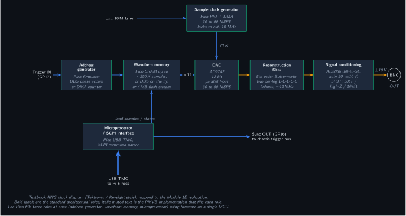
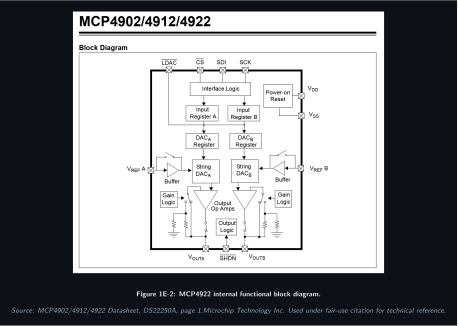
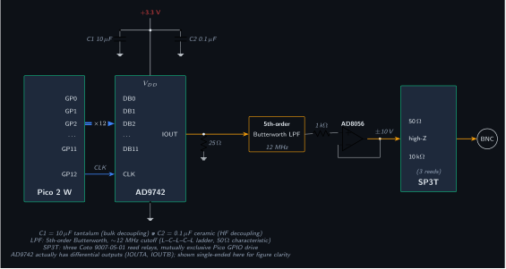

Version: 1.0 (May 2026) Module ID: 1E Tier: 1 Status: In Design Parent SDD section: 7.5.5 of the PMVB System Design Document
Module 1E generates audio-band analog waveforms for amplifier characterization, in-ear monitor testing, and any test sequence that needs a controlled stimulus into a DUT. The module is built on a single Pico 2 W presenting as a USB-TMC instrument to the Pi 5 host; calibration constants live in the Pico’s onboard 4 MB flash. Per the v1.0 Path A architecture decision, no per-module Pi Zero 2 W sidecar is included. The design is a Pico-MCU-driven dual DAC + op-amp output buffer in the simplest possible topology that still hits the target performance envelope (DC to ~50 kHz, ±10 V into 600 Ω, 12-bit amplitude resolution).
A precomputed waveform sample table sits in the Pico’s flash. The Pico’s DMA engine streams samples from this table to the Microchip MCP4922 dual 12-bit DAC over SPI at up to 1 MSPS (per channel). The MCP4922 outputs are voltage-mode (range 0 to 4.096 V using its internal reference) and feed an op-amp output stage that level-shifts and amplifies the DAC signal to ±10 V single-ended, with selectable output impedance (50 Ω or 600 Ω) at a front-panel BNC connector.
For a 1 kHz sine wave at 1 MSPS DAC update rate, the waveform has 1000 samples per cycle, far above the Nyquist requirement, and the resulting total harmonic distortion is dominated by the DAC’s INL/DNL and the op-amp’s distortion (both well under 0.1% across the audio band). The 50 kHz upper limit is a margin call: at 50 kHz the cycle has 20 samples, producing a stair-step output that the output low-pass filter (in the op-amp stage) smooths to within 1% THD.
The MCP4922 is a deliberately conservative choice. It has no internal output amplifier (so we use external op-amp), modest SPI rate (max 20 MHz, comfortably driven by Pico SPI), and a well-characterized 12-bit linearity. An AD9744 (14-bit, 165 MSPS) would push module bandwidth into the MHz range but at substantially higher cost, more complex layout, and capability that isn’t needed for audio characterization. The MCP4922 is the right part for the bandwidth target.
The output stage can present two source impedances:
Switching is via a single SPDT reed relay that selects which series resistor sits between the op-amp output and the BNC.
The module exposes one auxiliary digital output that can be configured as a sync pulse (rising edge at the start of each waveform period) or a continuous gate. This output ties to the chassis-wide trigger bus (see SDD section 11.4) so that captures on Module 2E can be synchronized to AWG output without software-arming jitter.
Module 1E is documented across three figures: a system-level view showing where the module sits in the PMVB chassis, a redrawn datasheet figure for the MCP4922 internals, and a typical-application schematic showing the SPI bus, bypass network, and output buffer stage.
Figure 1E-1: Module 1E system context (system block diagram)

Figure 1E-2: MCP4922 internal functional block diagram

Source: MCP4902/4912/4922 Datasheet, DS22250A, page 1. Microchip Technology Inc. Used under fair-use citation for technical reference.
Figure 1E-3: Module 1E typical application schematic

Schematic shows the SPI command path, the V_DD bypass network per DS22250A §6.2, and a unity-gain buffer stage. The full ±10 V output topology with TL072 level-shift and gain stage is documented in section 3 below.
The op-amp is configured as an inverting summing amplifier. Two inputs:
Resulting transfer function:
V_out = -G × (V_DAC - 2.048)With G = 5 (set by feedback resistor and input resistor), V_out swings from -10.24 V (when V_DAC = 0) to +10.24 V (when V_DAC = 4.096), giving the full ±10 V output range.
The MCP6232 is rated for +1.8 V to +6.0 V single-supply, but for ±10 V output we need ±12 V dual supply. The MCP6232 is not the right part for this; we should instead use a rail-to-rail op-amp rated for ±15 V supply such as the OP07 (precision, ±18 V) or TL072 (audio, ±18 V). Update the schematic to use TL072 with the +12 V and -12 V rails from the chassis TX300 PSU.
(SDD section 7.5.5 specified MCP6232 for output buffering; this design doc supersedes that for the op-amp choice. The SDD will be updated in v1.1 to match.)
An RC low-pass filter at the op-amp output rolls off above ~80 kHz to suppress DAC stair-step quantization noise without affecting the audio band. R = 10 Ω, C = 200 nF gives a corner near 80 kHz. The filter sits before the impedance-switching relay.
A Coto 9007 reed relay (12 V coil, 1 A contact, SPDT) selects between two series resistors: - 50 Ω: a Vishay PER-50 precision metal-film 50 Ω 0.1% resistor - 600 Ω: a Vishay PER-600 precision metal-film 600 Ω 0.1% resistor
The relay is driven by a Pico GPIO through a 2N3904 transistor and a flyback diode (1N4148) across the coil.
Every IC gets a 0.1 µF X7R ceramic right at the supply pin, plus a shared 10 µF tantalum bulk cap at the supply entry to the module.
| Pico Pin | GP | Function | MCP4922 Pin | Notes |
|---|---|---|---|---|
| 4 | GP2 | SPI0_SCK | 3 (SCK) | up to 20 MHz |
| 5 | GP3 | SPI0_TX (MOSI) | 4 (SDI) | DAC data in |
| 7 | GP5 | CS_DAC | 2 (CS̄) | active low |
| 11 | GP8 | LDAC | 5 (LDAC̄) | tied low for synchronous update, or pulsed for deferred update |
| Pico Pin | GP | Function | Notes |
|---|---|---|---|
| 14 | GP10 | RELAY_DRIVE | drives 2N3904 base for impedance switching relay |
| 16 | GP12 | SYNC_OUT | sync pulse to chassis trigger bus |
| 17 | GP13 | TRIG_IN | optional trigger input from chassis bus (for synchronized stimulus start) |
| Pico Pin | Function | Notes |
|---|---|---|
| 39 | VSYS | 5 V from chassis (USB-bus-powered via Pi 5 USB hub) |
| 38 | GND | shared chassis ground |
| 40 | 3V3_OUT | for MCP4922 VDD and op-amp Vref divider |
| MCP4922 Pin | Function | Connects to |
|---|---|---|
| 14 (VOUTA) | DAC channel A output | input resistor R_in1 to op-amp summing node |
| 12 (VOUTB) | DAC channel B output | reserved for second AWG channel (future) |
| 1 (VDD) | +3.3 V supply | from Pico 3V3_OUT |
| 13 (VSS) | GND | chassis GND |
| 8 (VREFA) | reference for channel A | tied to VDD for internal Vref of 4.096 V |
| 9 (VREFB) | reference for channel B | tied to VDD |
| TL072 Pin | Function | Connects to |
|---|---|---|
| 1 | OUT (channel A) | output filter and impedance-switching relay |
| 2 | IN- (channel A) | summing junction (R_in1 from DAC, R_in2 from bias divider, R_fb to OUT) |
| 3 | IN+ (channel A) | tied to GND |
| 4 | V- | -12 V from TX300 |
| 5 | IN+ (channel B) | unused; tied to GND |
| 6 | IN- (channel B) | unused; tied to OUT (channel B) |
| 7 | OUT (channel B) | unused |
| 8 | V+ | +12 V from TX300 |
| Parameter | Value |
|---|---|
| DAC | MCP4922 dual 12-bit SPI |
| Channels | 2 (1 primary output, 1 sync or secondary) |
| Sample rate (DAC update) | up to 1 MSPS via Pico DMA |
| Standard waveforms | Sine, square, triangle, ramp, noise, multitone |
| Arbitrary waveform depth | up to 32 K samples (16-bit) |
| Output range | ±10 V into 600 Ω (op-amp buffered) |
| Output impedance | 50 Ω or 600 Ω, switchable via reed relay |
| Frequency range | DC to ~50 kHz |
| Frequency accuracy | ±20 ppm crystal; ±2 ppm with external 10 MHz reference |
| Amplitude resolution | 12-bit (~5 mV at 10 V FS) |
| Output low-pass filter | RC at ~80 kHz |
import pyvisa
rm = pyvisa.ResourceManager('@py')
awg = rm.open_resource('USB::0xCAFE::0x4001::PMVB1E::INSTR')
awg.write('SOUR:FUNC SIN')
awg.write('SOUR:FREQ 1000')
awg.write('SOUR:VOLT 1.0') # 1 V peak-to-peak
awg.write('OUTP ON')
input('Press Enter to stop...')
awg.write('OUTP OFF')
awg.close()import numpy as np
from scipy.fft import rfft, rfftfreq
awg = open_module('1E')
scope = open_module('2E')
frequencies = np.logspace(np.log10(20), np.log10(20000), 31) # 20 Hz to 20 kHz, log-spaced
results = []
for f in frequencies:
awg.write(f'SOUR:FUNC SIN; SOUR:FREQ {f}; SOUR:VOLT 1.0; OUTP ON')
scope.write('DIG:CONF 0, 5.0, AC; DIG:RATE 1000000; DIG:DEPTH 100000; DIG:ARM')
samples = np.array(scope.query_binary_values('DIG:DATA? 0', datatype='f'))
spectrum = np.abs(rfft(samples))
freqs = rfftfreq(len(samples), 1/1e6)
fund_bin = np.argmin(np.abs(freqs - f))
fund = spectrum[fund_bin]
harms = [spectrum[np.argmin(np.abs(freqs - f*n))] for n in range(2, 6)]
thd = np.sqrt(sum(h**2 for h in harms)) / fund
results.append((f, thd))
awg.write('OUTP OFF')
for f, thd in results:
print(f'{f:8.1f} Hz: THD = {thd*100:.3f}%')awg.write('SOUR:MULT:UPLD [1000, 1100], [0.5, 0.5]') # SMPTE-style 60/7 ratio variant
awg.write('SOUR:VOLT 1.0; OUTP ON')
# Capture and FFT-analyze for sum/difference products near 100 Hz, 2.0 kHz, etc.awg.write('SOUR:FUNC NOIS')
awg.write('SOUR:VOLT 0.5; OUTP ON')
# Capture, integrate over band, compute spectral densityCross-referenced to Mouser primary, with Digi-Key alternate part numbers where available. Last verified May 2026; check stock and pricing before ordering.
| Item | Manufacturer P/N | Mouser P/N | Digi-Key P/N | Qty | Unit Cost | Notes |
|---|---|---|---|---|---|---|
| Raspberry Pi Pico 2 W | Raspberry Pi SC1632 | 358-SC1632 | 2648-SC1632-ND | 1 | $7 | RP2350 host MCU |
| MCP4922 dual 12-bit DAC | Microchip MCP4922-E/P | 579-MCP4922-E/P | MCP4922-E/P-ND | 1 | $4 | DIP-14, easy hand-solder |
| TL072 op-amp (precision, audio) | Texas Instruments TL072IP | 595-TL072IP | 296-1775-5-ND | 1 | $0.80 | DIP-8 |
| 2N3904 NPN BJT (relay driver) | onsemi 2N3904BU | 863-2N3904BU | 2N3904FS-ND | 1 | $0.10 | TO-92 |
| 1N4148 small-signal diode (relay flyback) | onsemi 1N4148 | 512-1N4148 | 1N4148FSCT-ND | 1 | $0.05 | DO-35 |
| Reed relay, 12 V coil, SPDT, 1 A | Coto 9007-12-01 | 906-9007-12-01 | 306-1004-ND | 1 | $4 | output Z switching |
| Precision resistor 50 Ω 0.1% 1/4 W | Vishay PER50R000B | 71-PER50R000B | PER50R000BCT-ND | 1 | $1 | 50 Ω output Z |
| Precision resistor 600 Ω 0.1% 1/4 W | Vishay CMF55600R00BHEB | 71-CMF55600R00BHEB | n/a | 1 | $1 | 600 Ω output Z |
| Output filter R: 10 Ω 1% 1/4 W | Yageo MFR-25FBF52-10R | 603-MFR-25FBF5210R | n/a | 1 | $0.10 | RC LP filter |
| Output filter C: 200 nF X7R 50 V | Kemet C320C204K5R5TA | 80-C320C204K5R5TA | 399-9839-ND | 1 | $0.30 | RC LP filter |
| Decoupling cap 0.1 µF X7R 50 V (qty 4) | Kemet C320C104K5R5TA | 80-C320C104K5R5TA | 399-9837-ND | 4 | $0.20 ea | per IC supply pin |
| Bulk cap 10 µF tantalum 25 V | Kemet T350E106K025AT | 80-T350E106K025AT | 399-3540-ND | 1 | $0.50 | module supply entry |
| Op-amp summing/feedback resistors 1% 1/4 W (R_in1, R_in2, R_fb) | Vishay MFR-25FBF52 series | 603-MFR-25FBF52* | n/a | 3 | $0.10 ea | gain network |
| Bias divider resistors 1% 1/4 W | Yageo MFR-25FBF52 series | 603-MFR-25FBF52* | n/a | 2 | $0.10 ea | 2.048 V reference from +12 V |
| BNC panel-mount jack | Amphenol 31-220-1 | 523-31-220-1 | ACX1244-ND | 1 | $4 | front-panel output |
| 3D-printed enclosure | n/a | n/a | n/a | 1 | $1 | PETG, ~10 g print |
| Pin headers, hookup wire | various | various | various | n/a | $2 | |
| Perfboard | Adafruit 1609 (or eq.) | 485-1609 | 1528-1609-ND | 1 | $3 | hand-build substrate |
| Total module BOM | ~$18 |
(BOM total matches SDD Table 7-28 with the TL072 substitution noted in section 3 and the v1.0 Path A architecture decision that removes the Pi Zero per-module sidecar.)
After module assembly, calibrate against a Fluke 87V (or equivalent calibrated DMM) and a 10 MHz GPSDO reference (or external function generator’s calibrated output) using the following procedure:
SOUR:FUNC SIN; SOUR:FREQ 1; SOUR:VOLT 0; OUTP ONCALC:CAL:OFFS 0, <millivolts>.SOUR:FUNC SIN; SOUR:FREQ 1000; SOUR:VOLT 10.0 (peak-to-peak).gain_correction = 10.0 / measured_pk_pk.CALC:CAL:GAIN 0, <gain_correction>.If your module includes the optional external 10 MHz reference input (chassis trigger bus), feed a 10 MHz GPSDO into the reference port and compare against the on-Pico crystal. Update the firmware’s frequency-divider constant accordingly. Without an external reference, the Pico’s crystal is rated ±20 ppm, which is ±20 Hz at 1 kHz; for audio characterization this is below the threshold of audibility and rarely matters.
In order, on first power-up:
lsusb on the host should show the PMVB device.SOUR:VOLT 0.0 and verify MCP4922 VOUTA reads 2.048 V on a DMM (DAC midpoint).SOUR:FUNC SIN; SOUR:FREQ 1000; SOUR:VOLT 5.0; OUTP ON. Output should be 5 Vpp sine at 1 kHz on a scope.(To be populated as the module is built.)